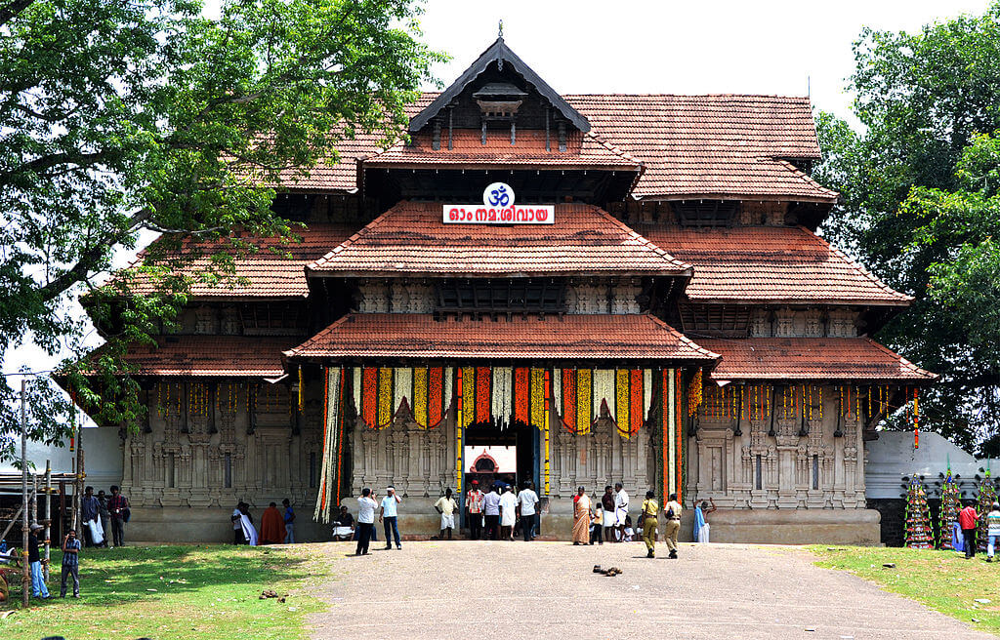

Thrissur
Thrissur is a city in the south Indian state of Kerala. It's known for sacred sites and
colorful festivals. In the center is Vadakkumnathan Temple, dedicated to Lord Shiva and adorned with
murals. The ornate, Indo-Gothic Our Lady of Dolours Basilica is nearby. To the north, Thiruvambady Temple
is home to several elephants. Sakthan Thampuran Palace houses an archaeology museum with bronze statues
and ancient coins.
Places to Visit in Thrissur
- Vadakkunnathan Temple.
- Shakthan Thampuran Palace.
- Athirappilly Waterfalls.
- Dolours Basilica.
- Kerala Kalamandalam.

An ancient temple of Kerala, the Vadakkunnathan Temple is also the oldest temple of the state dedicated to Lord Shiva. Following the architectural style of Kerala, the temple has monumental towers surrounding it. Talking about the inside of the temple, there are several mural paintings that depict various episodes from the Hindu Epic, Mahabharata. Thekkinkadu Maidan, which surrounds the temple from all sides is where the local festival of Thrissur Pooram is organized every year, granting this place an even more of spiritual importance.

Built after a rather Dutch style architecture, the Shakthan Thampuran Palace is a sight to behold. Finding its name in almost every list of Thrissur tourist places, the Shakthan Thampuran Palace was rebuilt in the place of Vadakkekara Palace in the year 1795 by the then King Ramavarma Thampuram of Cochin. In the year 2005, the palace was converted into a museum that now showcases a number of relics and really old antiques. A favourite one amongst several art admirers, the two-storeyed complex has high roofs, thicker than usual walls, and Italian Marble on the floor, making it a place right out of a traveller’s dream.

On the outskirts of the city at a distance of some 60 km, the Athirappilly waterfalls mark one of the best places to visit in Thrissur. Standing 80 ft tall and about 330 ft wide, these falls are the largest in the state of Kerala. The majesty of this place can be understood by the fact that the falls are located on the Chalakudy River, that originates from the highest mountain in India outside of the Himalayas. A perfect place for a group outing, these falls are sometimes called the Niagra of India

The Dolours Basilica, or the Basilica of Our Lady of Dolours (as the full name goes), is a distinct building in the city of Thrissur. You can easily recognize this grand church from its white facade. Smack in the middle of a lush green valley, this basilica is known for narrating quite a number of stories of love and faith. Spread in an area of about 25,000 sq feet, Dolours Basilica is the third tallest church in Asia and the largest church in the country with double storeyed aisles.

A University of Art and Culture, Kerala Kalamandir is a Government of India recognized institution dedicated to providing learning in the many performing arts native to India. Their main focus has always been on the arts that have been developed in Southern India. The Kerala Kalamandalam was what gave three main arts of Kerala a new life, namely Kathakali, Kudiyattam, and Mohiniyattam. For the sake of performing arts, and if you are someone who is a fanatic for them, this is definitely the place to be. The best part is that the institute is housed on the banks of the Bharathapuzha River.